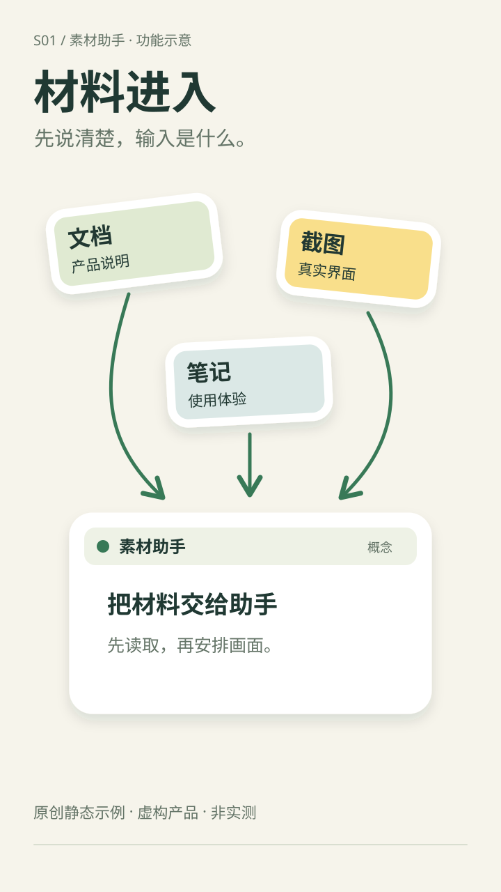
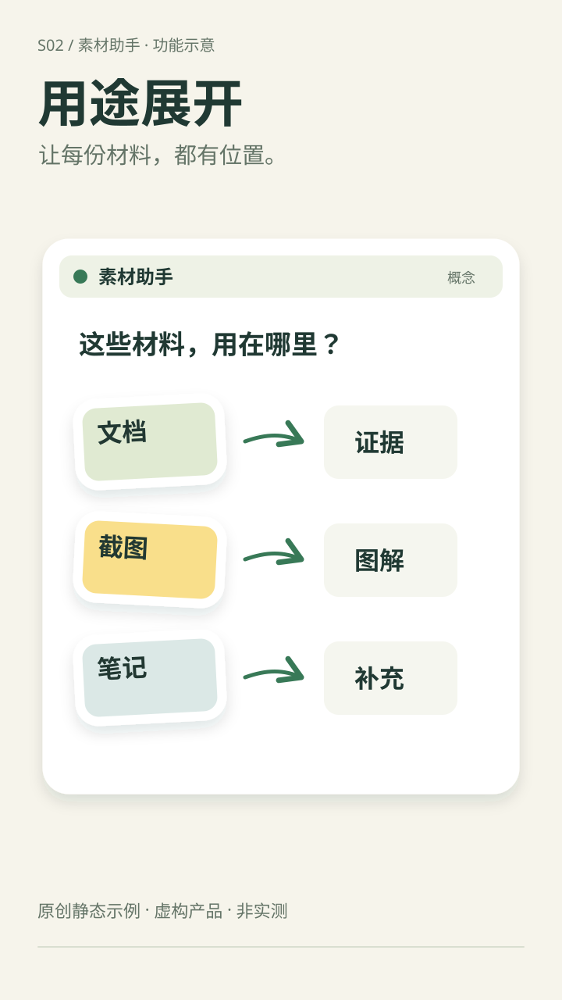
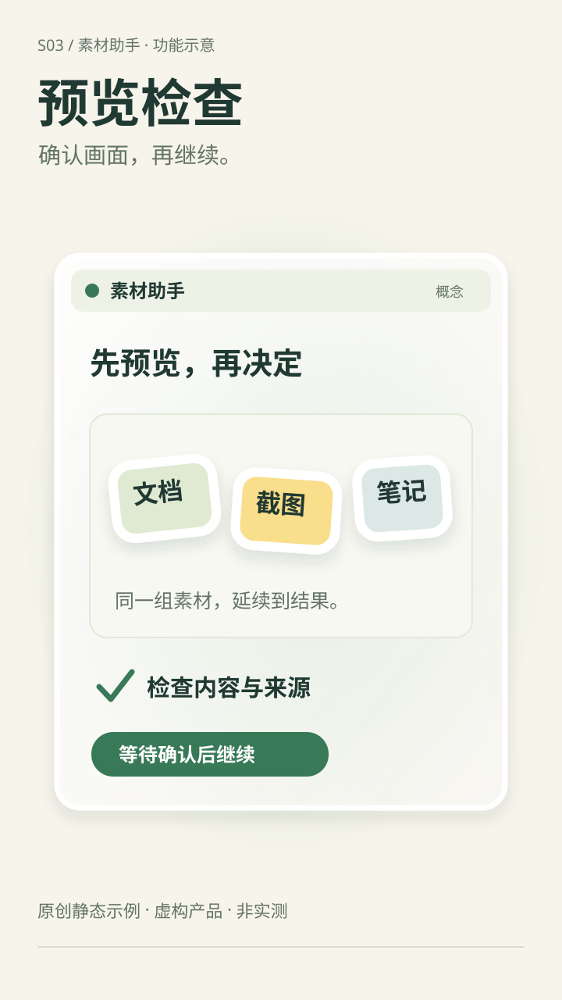

输入是什么S01 / 0–4s
模拟口播：把文档、截图和笔记交给素材助手。
动作建议：输入贴纸依次出现，箭头引导到同一窗口，保持阅读。本页为静态设计，动作尚未制作。
素材映射：S01 · A01 / A04；O01 为跨镜头持续出现的素材助手窗口。
贴纸解释对象与关系，玻璃质感只点亮关键一刻。

模拟口播：把文档、截图和笔记交给素材助手。
动作建议：输入贴纸依次出现，箭头引导到同一窗口，保持阅读。本页为静态设计，动作尚未制作。
素材映射：S01 · A01 / A04；O01 为跨镜头持续出现的素材助手窗口。

模拟口播：按用途展开，看看每份材料用在哪里。
动作建议：沿用窗口与材料身份，展开用途分组；结果稳定后衔接预览。本页为静态设计，动作尚未制作。
素材映射：S02 · A02 / A04；O01 为跨镜头持续出现的素材助手窗口。

模拟口播：先预览和检查，确认后再继续。
动作建议：同一窗口切为玻璃预览层，出现检查标记，停留在等待确认。本页为静态设计，动作尚未制作。
素材映射：S03 · A03 / A04；O01 为跨镜头持续出现的素材助手窗口。